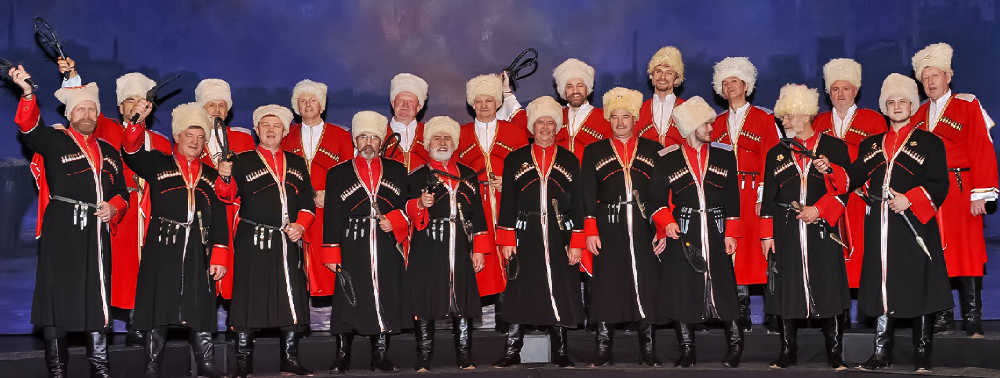
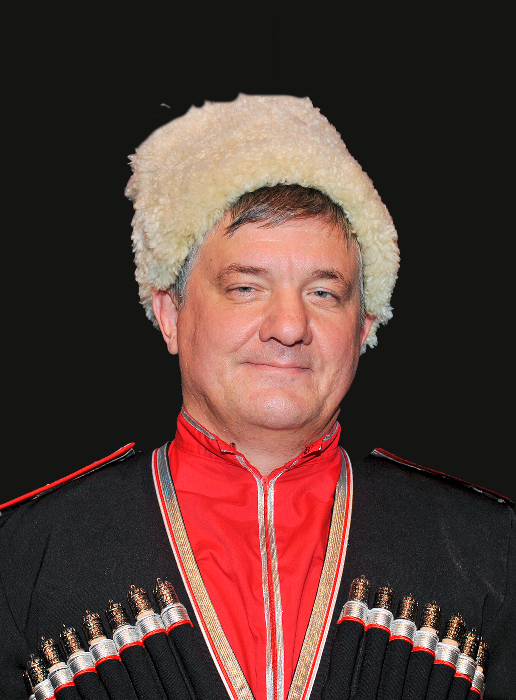
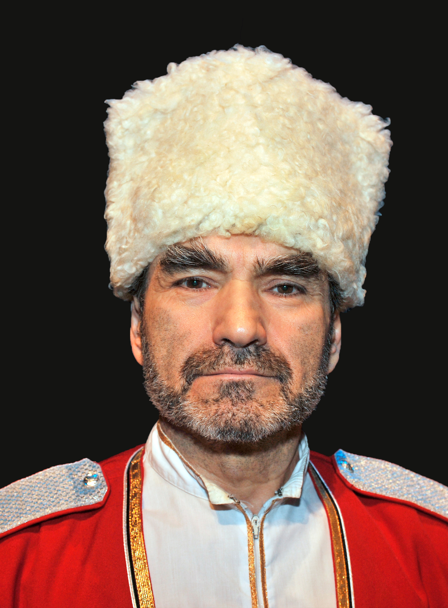
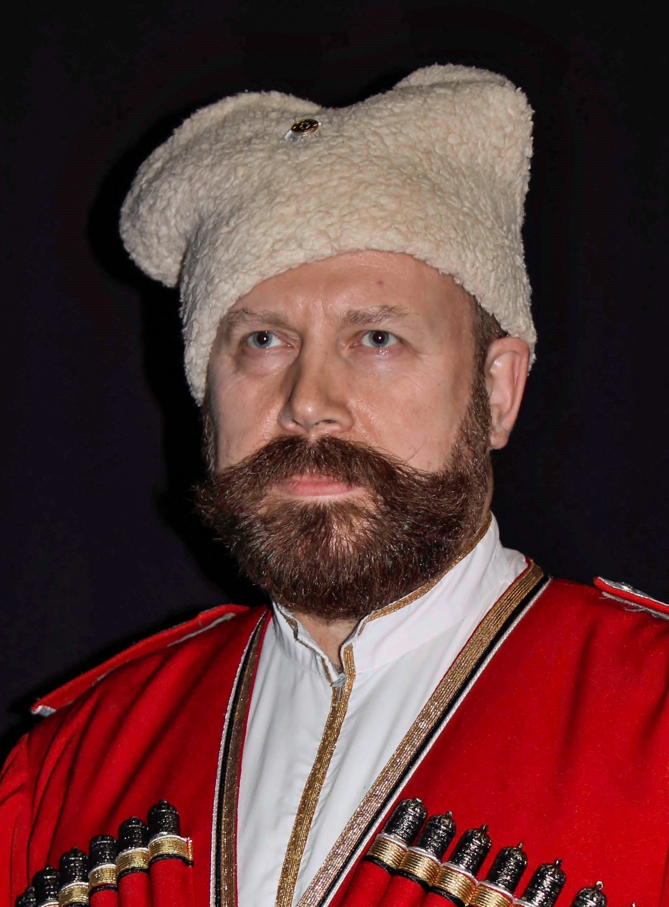
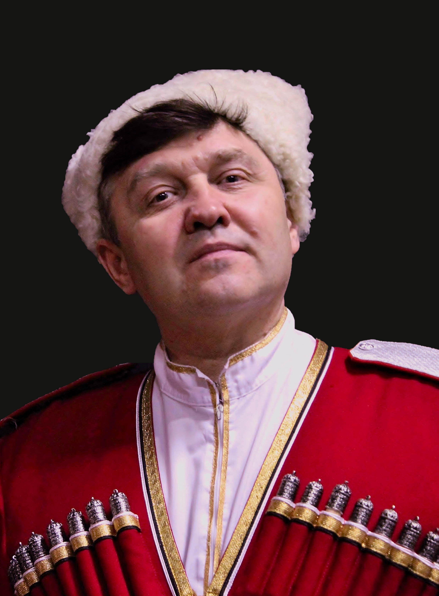
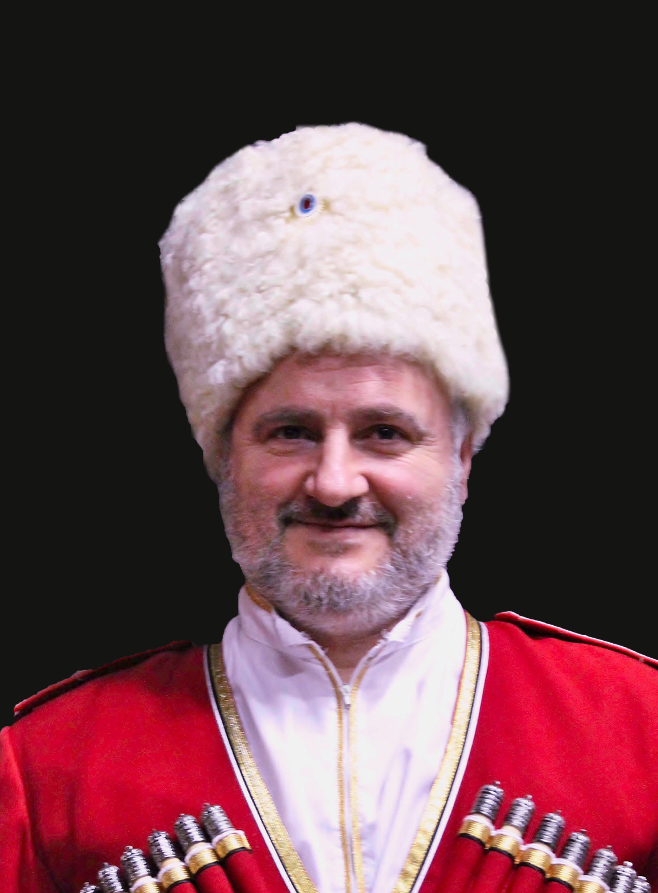
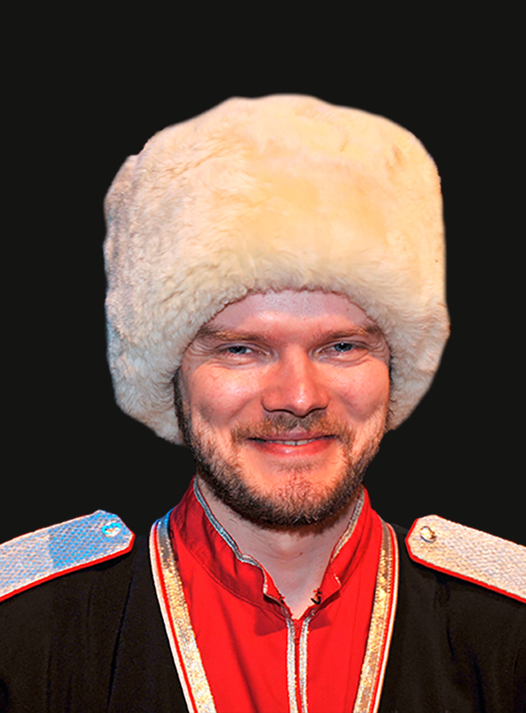
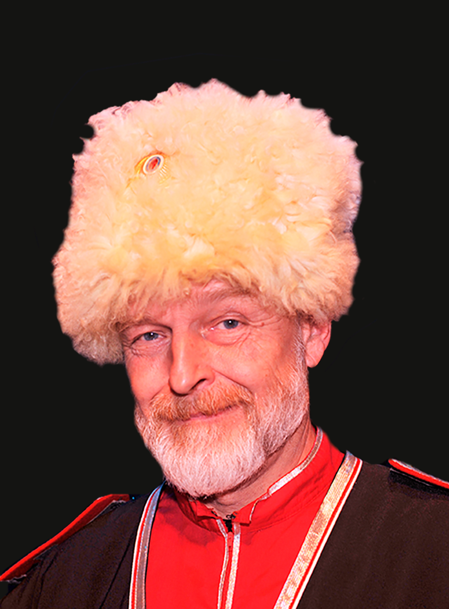
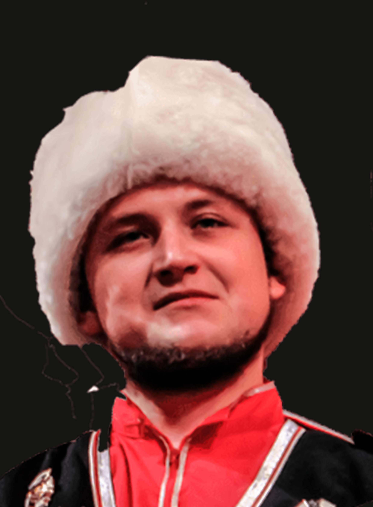

Vocalists



In 1992 the Don KosakenChor Russland – consisting of professional singers living in Russia – was founded in its spiritual cradle, the Russian Federation. These Russian vocalists belong to one of the world’s most famous choirs and perform National Anthems that make hearts beat faster. In addition to the 20-male choir, the six-piece Instrumental Soloists Ensemble “Philarmonia” will play authentic Russian folk instruments and accompany the choir. This ensemble consists of laureates who all play Russian folk instruments such as the Bayan, Balalaika and Domra in a virtuoso way. The combination of the singing, accompanied by the authentic Russian folk instruments, guarantees a compelling musical Russian evening in which the Soul of Russia comes to the fore. Marcel “Nicolajevich” Verhoeff was appointed chief conductor of this Russian company in 1993. Don KosakenChor Russland is now a welcome guest on the international concert stages. The tour “The Soul of Russia” took place from November 27 to December 24, 2019 in the Netherlands, Belgium and Germany in many theaters and other special places.On New Year’s Eve 2017, a recording was broadcast on Dutch National television from the Main Hall in the Concertgebouw in Amsterdam. Due to the great success, the New Year’s Eve special was repeated twice on: Saturday, December 14, 2019 at and on Saturday, December 21, 2019. On December 15, 2019, the choir performed live (Radio 4) at the Spiegelzaal program from the Royal Concertgebouw in Amsterdam. BBC 3 broadcast part of the Russian Vespers (CD Christmas in Russia) on January 6, 2020, the day of Christmas in Russia.
First Tenors

Bogomolov Anatoly

Mukmanov Abdul
Maslov Alexsey

Nikolaev Alexander

Petrenko Anatoly

Sirotkin Igor
Basses

Dolgopolov Dmitry

Krayushkin Kirill

Obuhov Valery
Khayrov Marcel

Yakushin Ivan

Shuvalov Dmitry